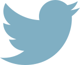

Over dit onderzoek
Onderzoekers van het Centre for Language and Speech Technology onderzoeken in hoeverre er een verband is te vinden tussen hoe vaak een politieke partij genoemd wordt op Twitter en hoe deze partij het doet in de peilingen en bij de verkiezingen zelf. Bij de parlementsverkiezingen van 2012 bleek er een sterk verband tussen deze twee te zijn (zie ons artikel Relating Political Party Mentions on Twitter with Polls and Election Results). Op deze pagina zijn een aantal grafieken te vinden met hoe vaak de naam van een politiek partij wordt genoemd in een tweet. De metingen beginnen op woensdag 18 februari en worden per uur bijgewerkt. De meest recente meting is altijd van drie uur geleden. De metingen worden gedaan op de tweets uit Twiqs, een dienst waarin ongeveer 40% van de Nederlandse tweets doorzoekbaar zijn.